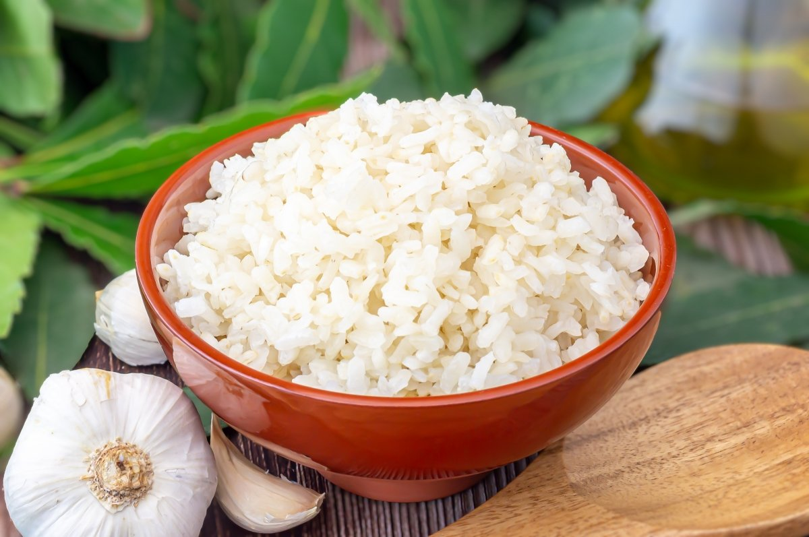

Arroz Blanco Casero

Lo mejor del sabor costeño
Este plato es muy característico de la costa porque se acompaña con el almuerzo siempre. A veces puede ir acompañado de otros alimentos como banano y más.
Ingredientes
- Una taza de arroz blanco
- Dos dientes de ajo
- Media cebolla
- Agua
- Apio
- Aceite
- Sal
Pasos Para Hacer el Arroz
- Picar cebolla, apio y machacar ajo
- Colocar 4 cucharadas de aceite previamente calentado en el caldero
- Sofritar hasta que quede dorado
- Colocar una taza de arroz
- Mezclar el arroz con el sofrito
- Añadir el agua (2 tazas de agua por 1 de arroz)
- Añadir una cucharada de sal
- Colocar a fuego medio hasta que el agua ya no esté presente
- Bajar a fuego bajo hasta que esté tostado por debajo
- Raspar y servir
Return to home